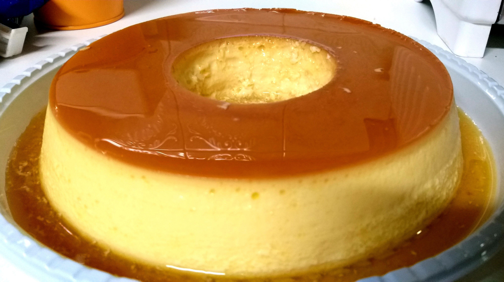

Livro de Receitas📖

🍮Pudim de leite condensado🍮
Ingredientes
- 6 colheres de sopa de açúcar
- 1 lata de leite condensado
- 1 lata de leite, use a mesma medida do leite condensado
- 3 ovos
Modo de Preparo
- Em uma forma para pudim, de 20 centímetros de diâmetro, coloque 6 colheres de sopa de açúcar e leve ao fogo médio até virar uma calda caramelada, por mais ou menos 3 minutos.
- Retire do fogo e vá virando a fôrma, de modo que a calda forre todo o fundo e lateral da mesma. Reserve.
- Em um liquidificador coloque uma lata de leite condensado, uma lata de leite, a mesma medida da lata de leite condensado, e 3 ovos e bata bem por mais ou menos 1 minuto.
- Desligue o liquidificador e deixe a mistura descansar por 15 minutos.
- Com esta espera a espuma fica sobre a superfície, o pudim fica sem furinhos, mas macio.
- Com a ajuda de uma colher segure a espuma que está na superfície e despeje o conteúdo do liquidificador, com cuidado, na fôrma caramelada reservada acima e leve ao forno médio, em banho-maria,
a 180 graus Celsius por uma hora e meia.
- Retire do forno, deixe esfriar e leve à geladeira por mais ou menos duas horas. Desenforme e sirva em seguida.
DICA para o pudim ficar lisinho e sem furinhos:
Não se esqueça de deixar a mistura descansar no liquidificador por 15 minutos.
Durante este tempo, a espuma vai subir e você conseguirá separá-la, retirando-a da mistura antes de assar. Isso vai evitar que seu pudim tenha furinhos.